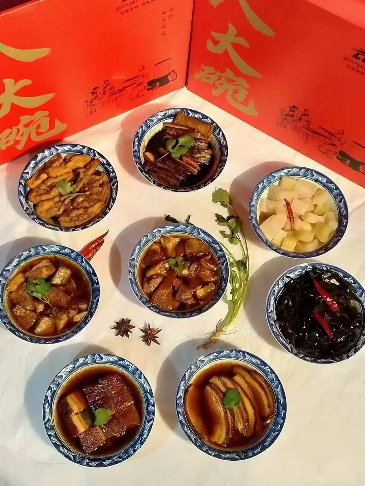

正定八大碗
正定八大碗是当地的传统名菜，以其丰富的菜品和独特的制作工艺而闻名。每一碗都有不同的食材和口味，包括红烧肉、丸子、豆腐等，口感醇厚，让人垂涎欲滴。
饸烙
河北的传统小吃，外皮酥脆，内里驴肉鲜嫩多汁，回味无穷 。
崩干
正定“崩肝”做法独特，选取优质黄牛肝，经过高温蒸煮等十几道工序，色泽酱红，入口鲜香。
正定夜市

正定“崩肝”做法独特，选取优质黄牛肝，经过高温蒸煮等十几道工序，色泽酱红，入口鲜香。
正定八大碗是当地的传统名菜，以其丰富的菜品和独特的制作工艺而闻名。每一碗都有不同的食材和口味，包括红烧肉、丸子、豆腐等，口感醇厚，让人垂涎欲滴。
河北的传统小吃，外皮酥脆，内里驴肉鲜嫩多汁，回味无穷 。
正定“崩肝”做法独特，选取优质黄牛肝，经过高温蒸煮等十几道工序，色泽酱红，入口鲜香。
正定“崩肝”做法独特，选取优质黄牛肝，经过高温蒸煮等十几道工序，色泽酱红，入口鲜香。